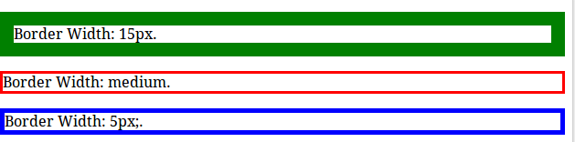

CSS Borders
CSS Borders
What is a CSS Border
For example see the below sample border
This is a sample CSS Border
Every CSS border will have there main properties those are as follows
- border-color: Specifies the color of a border
- border-style: Specifies whether a border should be solid, dashed line, double line, or one of the other possible values.
- border-width:Specifies the width of a border.
CSS Border Style
Border style property is used to style the border. CSS provides different types of borders.
List of CSS border-style values
solid: Border is a single solid line.
Example solid border
dotted: Border is a series of dots.
Example dotted border
dashed: Border is a series of short lines.
Example dashed border
double: Border is two solid lines.
Example double border
groove: Border looks as though it is carved into the page.
Example groove border
ridge: Border looks the opposite of groove.
Example ridge border
inset: Border makes the box look like it is embedded in the page.
Example inset border
outset: Border makes the box look like it is coming out of the canvas.
Example outset border
hidden: Same as none, except in terms of border-conflict resolution for table elements.
Click the below button to see all the css border-styles in action
Try It NowCSS border-color property
border-color property is used to style the color of a border. For example see the below borders with different colors
The border-color property can be set in 3 different ways.
- name - You can set the color of the border, for example
border-color:green; - RGB- You can set the color of the border with RGB value, for example
rgb(132, 57,57 ) - HEX- You can set the color of the border with HEX value, for example
#FFCCE5
The border-color property allows you to change the color of the border surrounding an element. You can individually change the color of the bottom, left, top and right sides of an element's border using the properties:
CSS Border Color Example
p.one {
border-style: groove;
border-color: green;
}
p.two {
border-style: solid;
border-color: yellow;
}
Try It Now
Below is the list of css border-color properties
border-bottom-color: It chanes the color of bottom border
p {
border-style: solid;
border-bottom-color: green;
}
Try It
border-top-color: It changes the color of the top border
p {
border-style: solid;
border-top-color: red;
}
Try Itborder-left-color:It changes the color of left border
p {
border-style: solid;
border-left-color: yellow;
}
Try Itborder-right-color:It changes the color of the right border
p {
border-style: solid;
border-right-color: blue;
}
Try It
Border Width Property
The CSS Border Width Property is used to set the border width. See the below image for more understanding
CSS width property can be set in two different ways as follows
- You can set the border with using pixels
- Using pre-defined values, like
thin, medium, thick
Note! The "border-width" property does not work if it is used alone. Use the "border-style" property to set the borders first.
CSS Border Width Example
p.first {
border-style: solid;
border-width: 15px;
border-color: green;
}
p.second {
border-style: solid;
border-width: medium;
border-color: red;
}
p.third {
border-style: solid;
border-width: 5px;
border-color: blue;
}
Try It Now
All CSS Border Properties
| Border | Description | Example |
|---|---|---|
| border | Used to set the border in a single declaration | Try It Now |
| border-color | Used to set the css border color of an element four borders | Try It Now |
| border-bottom | Used to set the css bottom border | Try It Now |
| border-bottom-color | Used to set the color of css border bottom | Try It Now |
| border-bottom-style | Used to style the bottom of the css border | Try It Now |
| border-left | Used to set the left side of the border. | Try It Now |
| border-left-color | Used to set the color of the left border | Try It Now |
| border-left-style | Used to set the style of the left border | Try It Now |
| border-left-width | Used to set the width of the left border | Try It Now |
| border-right | Used to set all the right border properties in one declaration | Try It Now |
| border-right-color | Used to set the color of the right border | Try It Now |
| border-right-style | Used to set the style of the right border | Try It Now |
| border-top | Used to set all the top border properties in one declaration | Try It Now |
| border-top-color | Used to set the color of the top border | Try It Now |
| border-top-style | Used to set the style the css top border | Try It Now |
| border-top-width | Used to set the width of the css top border | Try It Now |